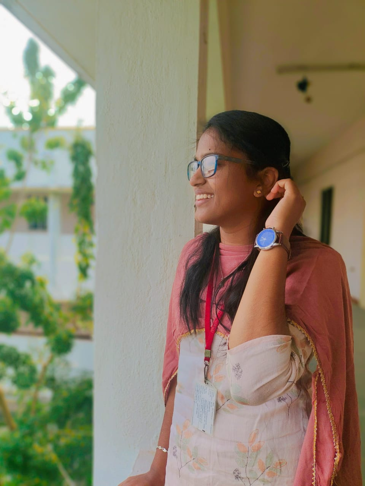

Priya
Hello friends, I am Priya and this is my first site.
Objective
To achieve greater career growth through continous learning,visionary and competetive with changing environment and to contribute for the growth of the organisation
Education
- I have completed my Undergraduate degree in Computer Science Engineering at Anna University BIT Campus, Tiruchirapalli with the percentage of 87.40%
- I have completed my HSC at Vidyaa Vikas.Mat.Hr.Sec.School with the percentage of 85.1%
- I have completed my SSLC at 21stCentury.Mat.Hr.Sec.School with the percentage of 91.5%
Technical Skills
Projects
- College Community Web Portal
- Flight delay prediction using Meachine learning algorithms
- Cognitive Behavioral Tamil Music Therapy recommendation using facial recognition
Non-Technicak Skills
- Analytical skills
- Decision making
- Public Speaking
- Presentation
- Sportiveness
- Time Management
- Team work
- Leadership
Interests
- Adventuring
- Drawing
- Craft works
- Travel
- Badminton
Languages
- English-full professional proficiency
- TamilNative or bilingual proficiency
- Hindi-Limited working proficiency
Contact me